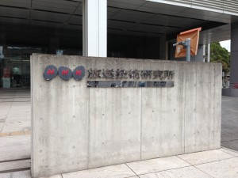
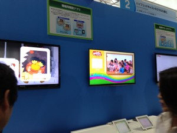

NHK技研公開 見学レポート
先日(29日)、東京都世田谷区のNHK技術研究所で行われた「NHK技術研究公開2013」に見学しに行きました。
本来一般の学生は入場できないビジネスデーだったのですが、研究室の教授のおかげで特別に入ることができました。
いくつか僕の印象に残ったブースを紹介しようと思います。

NHK技研入口前。趣を感じます。
ブース番号[9] スーパーハイビジョン長距離光伝送システム
NHK技術研究所が中心となって研究開発をしているスーパーハイビジョンの光ファイバーを用いた長距離伝送システムの開発ブースです。
大画面、超高精細度を誇るスーパーハイビジョンの大容量の情報(72Gbpsの非圧縮スーパーハイビジョン信号)を、
無中継(1本の光ファイバー)でなんと300kmも伝送できるというシステムを展示していました。
300kmとはすごい！僕の実家(静岡)からここ東京世田谷まで余裕で届くなんて…
実物の光ファイバーも展示してありました。巻いてあったのであまり実感は得られませんでしたけれども。
{kind=link}
赤い筒に全部で300kmの光ファイバーが巻かれてます。
ブース番号[21] 広色域スーパーハイビジョンシステム
スーパーハイビジョンは、高質感・高臨場感を伝える為に鮮やかな色を正確に表現できるよう広色域表色系を採用しているそうです。
それを実現させるスーパーハイビジョンカメラとスーパーハイビジョンプロジェクターを展示していました。
とにかく色が綺麗！展示されていた実物の被写体と遜色ない高彩度でした。カメラもすごいけどプロジェクターもすごい！
講堂 スーパーハイビジョンシアター
スーパーハイビジョンによる11分間の映像放映です。
ロンドン五輪のダイジェストやリオのカーニバルの映像を通して、その実力を体感してもらおうという試み。
映画館のスクリーンサイズで見るスーパーハイビジョン。もちろん初体験でしたが、圧倒的な高精細度に眼が離せませんでした。
観戦席に座る背景の観客の顔や、構えているカメラまで丸見え！舞い散る紙吹雪も一枚一枚が良く見える。
その場にいるような臨場感を味わうことができました。
ブース番号[1,2] ハイブリッドキャスト,ハイブリッドキャストのさらなる進化
都合上一番最初のブースを一番最後に回りました。そして一番印象に残ったブースでもあります。
ハイブリッドキャストは、ネットと放送の連携により今までにない様々なサービスの提供を目的とした技術です。
放送に合わせてスマホのアプリを起動し、それによって実現されるサービスの例などが展示されています。
中でも感動したのが、NHK番組「おかあさんといっしょ」とiPadのハイブリッドキャスト使用例です。
番組中の「お絵かき」にリアルタイムで参加してテレビを見ながら絵を描き、それを送信して共有するものや、
テレビに表示される音符と音楽に合わせてiPadをタッチして遊べるリズムゲームを遅延なく楽しめたり、まさにゲームと放送の融合でした。
この企画の秘める可能性は、ゲーム業界に大きく関わるものだと思います。新たなビジネス市場が近い将来必ず登場するわけです。
このハイブリッドキャストを用いれば、番組を介して視聴者同士の対戦ができたり、
いろいろな動画サイトで見るような「流れるコメント」を、放映されている番組に対してリアルタイムで共有して表示させたりすることができるようになるのです。

都合により肝心な手元は写せませんでした。
テレビの時代はまだまだこれからだと思いました。紹介は以上ですが、上記のブース以外も興味をそそるものばかりでした。
音響、有機ELディスプレイ、新たな記憶媒体等々どれもすごい技術の展示ばかりです。
みなさんもぜひ一度足を運んでみてください。
新たな発見と驚きで楽しめることうけあいです。
NHK技研公開2013 公開日5/30(木)~6/2(日)